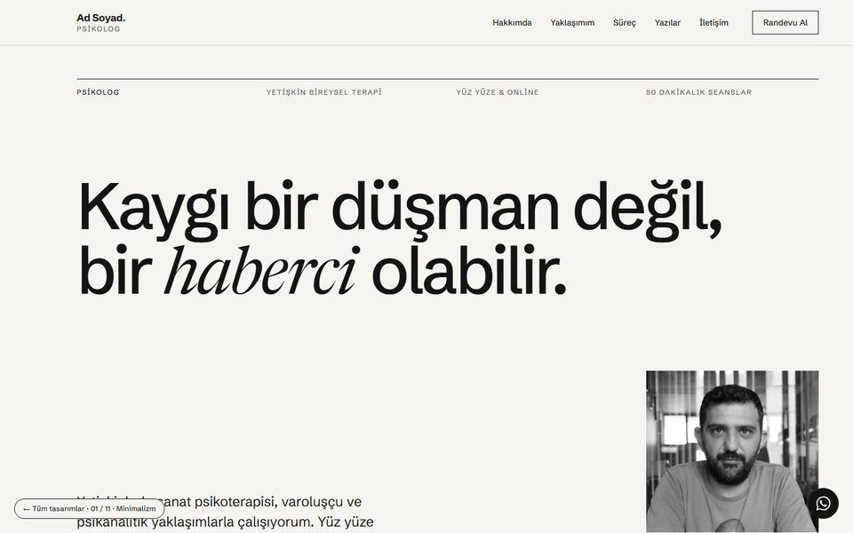
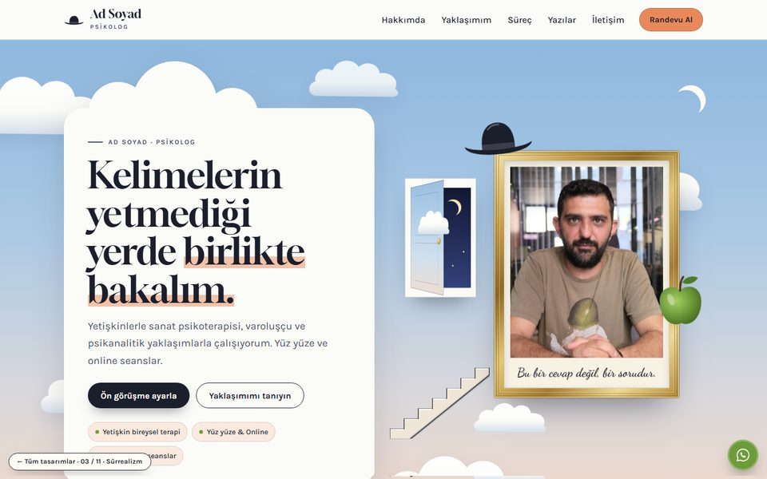
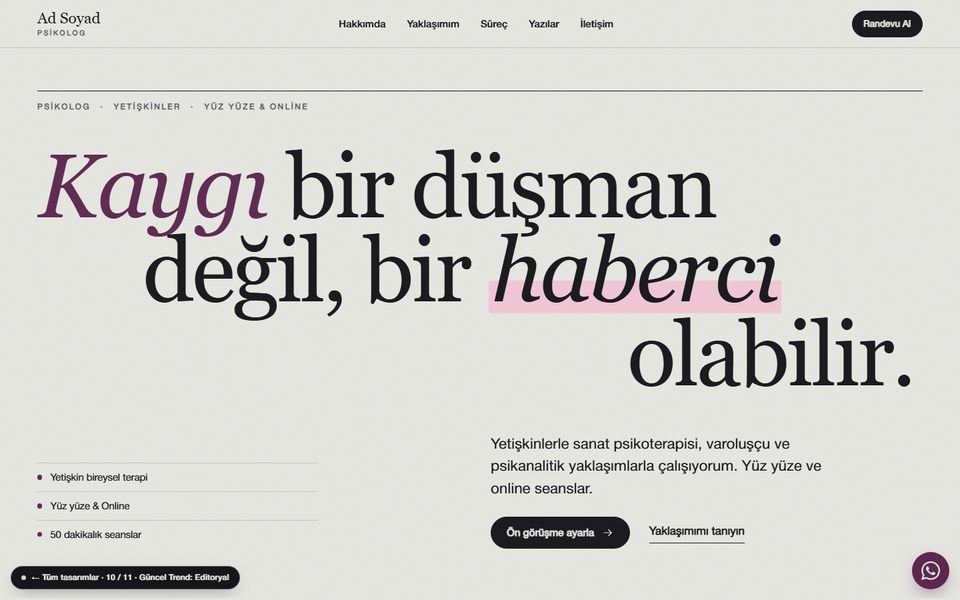
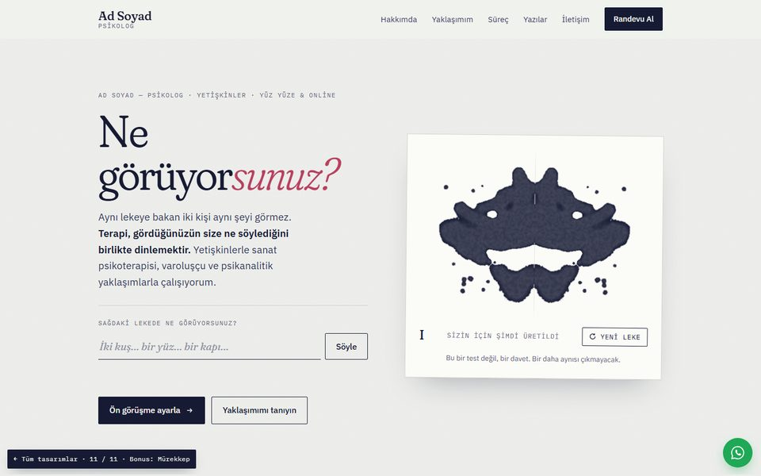

Sade, ferah ve sakin. Bol beyaz alan, tek bir vurgu rengi ve bir özgeçmiş gibi okunan düzenli bölümler.
Tasarımı incele
Rüyanın dili. Magritte esintili bir gökyüzü, süzülen kapı ve tablolar; yaklaşımlar müze tabloları gibi sergileniyor.
Tasarımı incele
Bir dergi gibi. Büyük, zarif başlıklar, kaydırdıkça hareketlenen sayfa ve uzun okuma düzeninde “Kaygının Anlamı”.
Tasarımı incele
Her ziyaretçiye o an üretilen, bir daha tekrarlanmayan simetrik bir mürekkep lekesi ve tek bir soru: “Ne görüyorsunuz?”
Tasarımı inceleNot: İsim, telefon, e-posta ve adres şimdilik yer tutucu olarak duruyor; seçiminizden sonra gerçek bilgilerinizle güncellenecek.
Yazı başlıkları ve bazı kısa bağlantı cümleleri örnek olarak yazıldı; yayından önce sizin onayınızla düzenlenecek.
Bu sayfalar yalnızca önizlemedir; formlar mesaj göndermez.